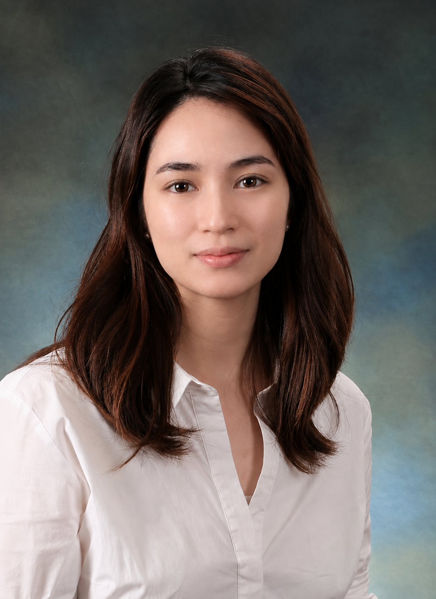
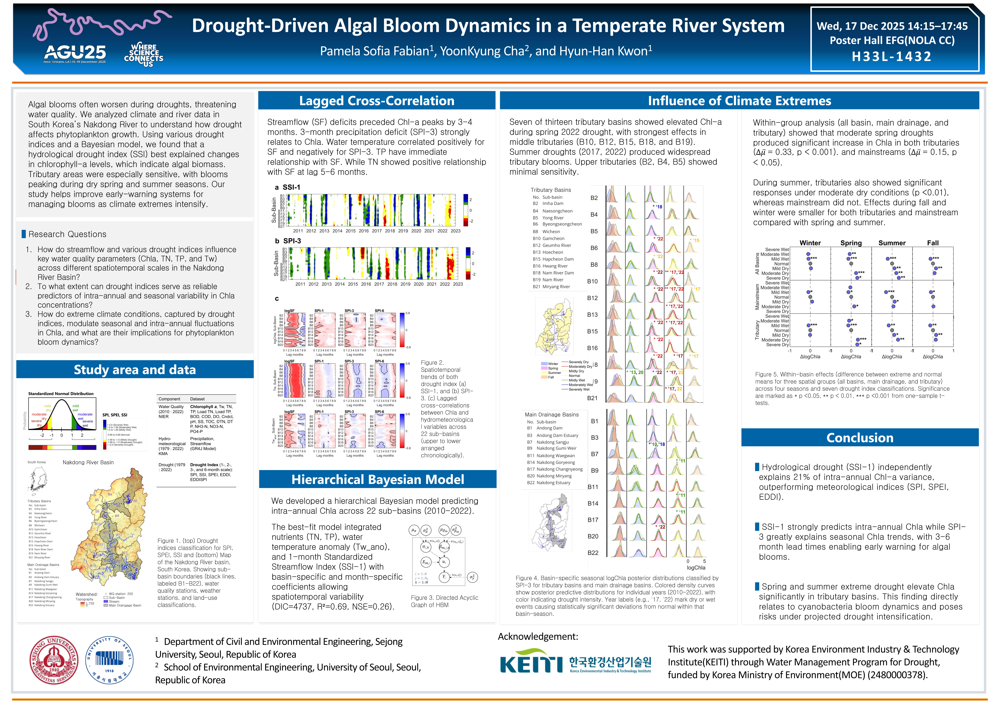

Research Professor · University of Seoul
I’m a Research Professor at the University of Seoul. I work on understanding the impacts of extreme events on water resources and what adaptation looks like in practice. I am interested in the space where environmental science, policy, and industry meet, and in building research that is legible and useful across all three.
I received my PhD from Sejong University, advised by Prof. Kwon Hyun-Han (AHRL). My doctoral thesis focused on leveraging drought indices for developing early-warning systems, particularly for freshwater quality and ecosystems.

